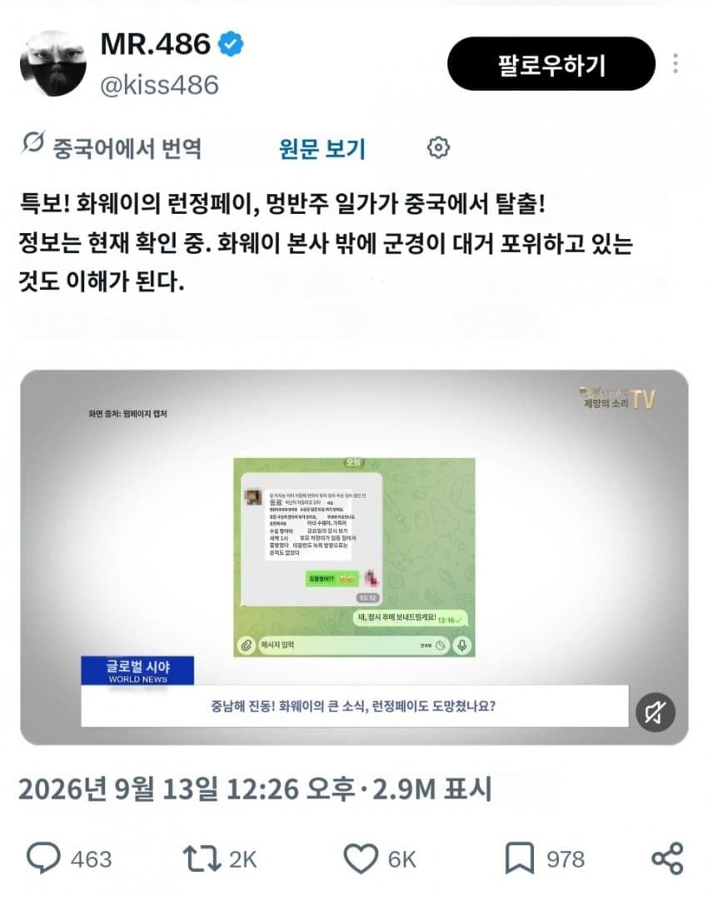
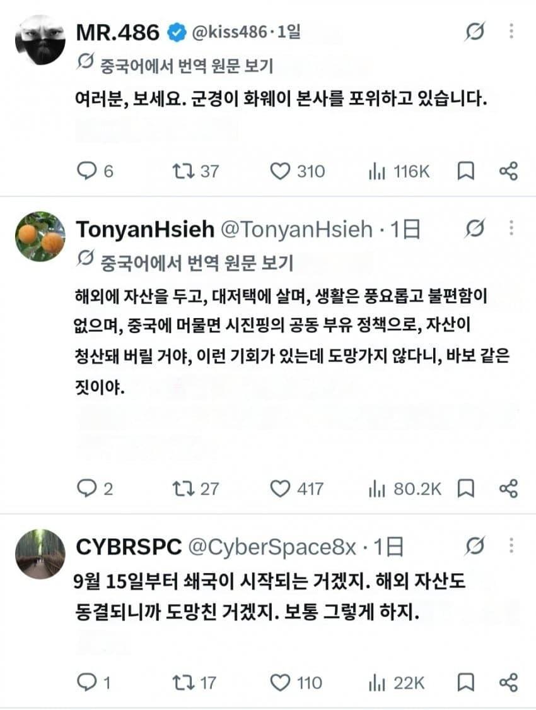
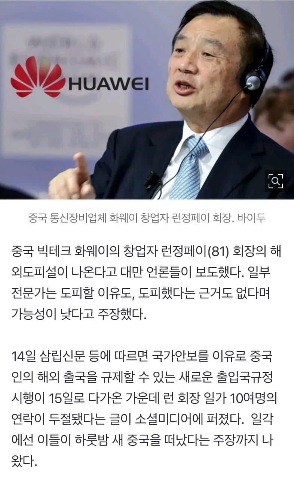

중국군이 화웨이 본사 둘러싸고
런정페이가 런했다는 소식이 쏟아져 나오는 중



중국군이 화웨이 본사 둘러싸고
런정페이가 런했다는 소식이 쏟아져 나오는 중
정페이! run!
Run 정페이 run
알리바바행이네 ㄷㄷ
회장딸 멍완저우 중국스파이라고 캐나다에서 구속된적도 있는데 중국에서 도망갔다고?
얼마전 트위터 보다가 어떤 중국인이 찌라시 같은걸 올린걸 봤는데 꽤 유명한 젊은 코인 창시자가 다른쪽으로 도망간다고 정보 뿌려서 공안 속이고 무슨 통통배 짐 아래에 숨어서 도망갔다는 내용이었음
그런데 이글을 보니, 중국은 조만간 돈많은 놈들은 재산을 뺏기게 되어있나?
중국은 ㄹㅇ 무섭네
진짜 도망갔다면 설마 대만 전쟁이 임박한건가 좀 무서운데
그땐 도망치고 싶어도 못도망가니까
ㄹㅇ 전쟁이 목전까지 왔나 싶음
미국에서는 대만전쟁 안날꺼라던데
미국에서는 이란전쟁 끝낸다고 수차례 했는데
근데 이거진짜면 이젠 다른재벌들 도망못치겟네 보안강화되서
눈치게임 성공 ㅋㅋㅋ
알리바바 ceo처럼 잡혀가서 입을 제외한 모든 구멍으로 짜장면 먹이는거 아니냐
런렁페이의 런은 달릴 런인가
달릴 깅 자 아니었어?
아침조에 달릴깅은 맞음
존나달릴 런
Run!! Jeong Pay는 어떤걸로 하시겠습니까?
아니 경찰도 아니고 자꾸 왜 군인이 포위를 해 미친놈들인가
실제 출국규제 강화 → 시행 직전 런정페이 가족 연락두절이라는 익명 X 게시물 → 해안 차량/무장경찰 등의 미확인 이야기가 결합 → “런정페이 일가가 중국을 탈출했다”로 확대
쟤네들은 작년에 시진핑 실각됐다고 헛소리 떠들더니 또 시작이네
열정페이 같은건줄 알았네
검색해보니 허위뉴스라고 하는데 뭐가 진실인거지?
런정페이 任正非.... 正인 거야, 非인 거야? ㅆㅂ